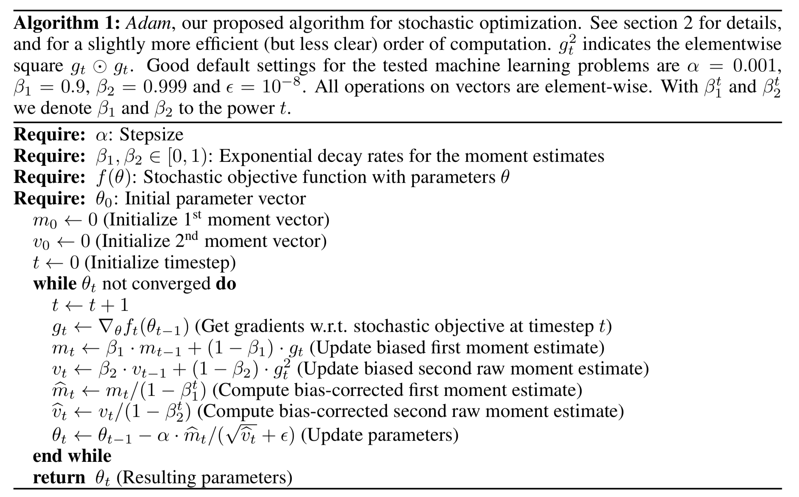

3.6. optimization¶
3.6.1. convex optimization¶
3.6.1.1. convex sets (boyd 2)¶
affine set: \(x_1, x_2 \in C, \theta \in \mathbb{R} \implies \theta x_1 + (1 - \theta) x_2 \in C\)
affine hull: aff C = {\(\sum \theta_i x_i | x_i \in C, \sum \theta_i =1 \)}
convex set: \(x_1, x_2 \in C, 0 \leq \theta \leq 1 \implies \theta x_1 + (1 - \theta) x_2 \)
convex hull: conv C = {\(\sum \theta_i x_i \: | x_i \in C, \theta_i \geq 0, \sum \theta_i = 1\)}
cone: \(\theta \geq 0 \implies \theta x \in C\)
operations that preserve convexity
intersection (finite intersection of half-spaces)
pointwise max of affine funcs
composition
affine
perspective
linar fractional = projective
generalized inequalities:
proper cone K: convex, closed, pointed, solid
\(x \preceq_K y \iff y-x \in K\)
separating hyperplane thm: C, D convex \(C \cap D =\emptyset \implies \exists a \neq 0, b \: s.t. \\ a^Tx \leq b \forall x \in C, \\a^Tx \geq b \forall x \in D\)
supporting hyperplane thm: {\(x|a^tx = a^t x_0\)} where \(x_0\) on boundary of convex C
dual cone \(K^*\) = {\(y|x^Ty \geq 0 \: \forall x \in K\)}
\(\preceq_{K^*}\) is dual of \(\preceq_K\)
\(x \preceq_K y \iff \lambda^T x \leq \lambda^T y \quad \forall \: \lambda \succeq_{K^*} 0\)
3.6.1.1.1. geometry¶
ellipsoid: {\(x \in \mathbb{R}^n | (x-x_c)^T P^{-1} (x-x_c) \leq 1\)} where P symmetric, PSD
{\(x_c + Au | ||u||_2 \leq 1\)}
hyperplane: {\(x|a^Tx = b\)} ~ creates a halfspace
norm cone: {\((x, t)| \: ||x|| \leq t\)}
polyhedron: {x | Ax=b, Cx=d} = \(\{ \sum_i^k \theta_i v_i \; | \sum_i^m \theta_i = 1, \theta_i \geq 0 \} \: m \leq k\)
simplex: conv{\(v_{0:k}\)}
3.6.1.2. convex funcs (boyd 3)¶
definitions
Jensen’s inequality \(0 \leq \theta \leq 1\)
\(f(\theta x_1 + (1 - \theta) x_2) \leq \theta f(x_1) + (1 - \theta) f(x_2)\)
\(f(E[X]) \leq E[f(X)]\)
\(\nabla^2 f(x) \succeq 0\)
\(f(x_2) \geq f(x_1) + \nabla f(x_1)^T (x_2 - x_1)\)
can show this by restricting to an arbitrary line
consider epi f - also use things that preseve convexity
concepts
epigraph epi f = \(\{ (x, t) \; | \: x \in dom f, f(x) \leq t \}\)
extended value extension: \(\tilde{f}(x) = f(x)\) if \(x \in dom f\) else \(\infty\)
wide sense function - can take on values \(\pm \infty\)
= dom f = {\(x | f(x) < \infty\)}
wide sense convex func: \(f(x) = inf \{ t \in \mathbb{R} | (x, t) \in F\}\) where \(F \subseteq \mathbb{R}^{n+1}\)
\(F(x) = inf \{ t \in \mathbb{R} | (x, t) \in F \}\)
\(\alpha\)-sublevel set of convex func is convex
operations that preserve convexity
nonnegative weighted sums ~ multiplies for logs
affine map
pointwise max of convex
composition
perspective
minimization ~ sometimes
conjugate of f
\(f^*(y) = \underset{x \in dom f}{sup} \: y^T x - f(x)\)
dom \(f^*\) = {\(y|f^*(y)\) is finite}
called Legendre transform when f differentiable
fenchel’s inequality: \(f(x) + f^*(y) \geq x^ty\)
\(f^{**} = f\) iff convex, closed
ex. \(f(S) = log \: det X^{-1}\)
\(f^*(Y) = \underset{X}{sup} [tr(YX) + log \: det X]\)
\(= -n - log \: det(-Y) \) if \(-Y \in S^n_{++}\)
can use conj. to go other way: \(f(y) = \underset{x}{sup}(y^Tx - f^*(x))\)
3.6.1.3. optimization problems (boyd 4)¶
3.6.1.4. optimization¶
standard form: \(p^* = min \: f_0(x)\\s.t. \: f_i(x) \leq 0 \\ h_i(x) = 0\)
equivalent problems
change of vars
constraint transformations
slack vars
eliminating equalities
eliminating linear equalities
introducing equalities
optimizing over some vars ~ ex. quadratic
epigraph form: \(min \: t \: s.t. \: f_0 \leq t\)
implicit + explicit constraints
3.6.1.5. convex optimization¶
standard form: $\(p^* = min \: f_0(x)\\s.t. \: f_i(x) \leq 0 \\ a_i^Tx = b_i\)$ where all f are convex
optimality criteria (special cases of KKT)
x optimal if
x is feasible
\(\nabla f_0 (x)^T(y-x) \geq 0 \: \forall y \) feasible
if unconstrained \(\nabla f_0 (x) = 0\)
if equality only Ax=b, \(\nabla f_0 (x) \perp N(A)\)
\(x \succeq 0\), \(\nabla f_0 (x) \succeq 0; x_i (\nabla f_0 (x))_i = 0\)
equivalent convex problems
eliminating equality constraints
introducing equality constraints
slack vars ~ for linear inequalities
epigraph form
minimizing over some vars
3.6.1.6. linear optimization¶
- \[\begin{split}p^* = min \: c^T x + d\\s.t. \: Gx \succeq h \\ Ax=b\end{split}\]
standard form \(x \succeq 0\) is the only inequality
standard dual: max \(-b^T \nu\) s.t. \(A^T \nu + c \geq 0\)
linear-fractional program
\(min \: \frac{c^Tx + d}{e^tx+f} \\ s.t \: Gx \succeq h \\ Ax = b\) ~ can be converted to LP
3.6.1.7. quadratic optimization¶
- \[\begin{split}min \: 1/2 x^TPx + q^Txr \\s.t. \: Gx \succeq h$$ where $P \in S_+^n$ - *QCQP* - inequality constraints also convex - ex. $min \: ||Ax-b||_2^2$ - *SOCP* - $$min f^Tx \\ s.t. \: ||A_ix+b_i||_2 \leq c_i^T + d_i \\ Fx=g\end{split}\]
3.6.1.8. geometric program¶
- \[ \begin{align}\begin{aligned}\begin{split}min \: f_0(x) \\ s.t. \: f_i(x) \leq 1 \: i = 1:m \\ h_i(x) = 1 \: i = 1:p$$ where $f_{0:m}$ posynomials, $h_i$ monomials - *monomial* $f(x) = c x_1^{a_1} \cdot x_n^{a_n}, c>0$ - posynomial ~ sum of monomials ~ can transform into convex w/ $y_i = log x_i$\end{split}\\\begin{split}### generalized inequality - $$min \: f_0(x)\\s.t. \: f_i(x) \preceq_{K_i} 0, i=1:m\\Ax=b\end{split}\end{aligned}\end{align} \]
conic form problem: $\(min \: c^Tx \\ s.t. \: Fx +g \preceq_K 0\\Ax=b\)\( ~ set \)K=S_+^K$
SDP = semi-definite program: $\(min \: c^T x\\s.t. \: x_1F_1+...+x_nF_n+G \preceq 0\\Ax=b\)\( ~ where \)F_1, …, F_n \in S^k$
standard form: \(min \: tr(CX) \\ s.to \: tr(A_iX)=b_i \\ X \succeq 0\)
3.6.2. duality (boyd 5)¶
consider \(\min \: f_0 (x) \\ s.t. \: f_i(x) \leq 0 \\ h_i(x) = 0\)
lagrangian \(L(x, \lambda, \nu) = f_0(x) + \sum \lambda_i f_i(x) + \sum \nu_i h_i(x)\)
dual function \(g(\lambda, \nu) = \underset{x \in D}{\inf} L(x, \lambda, \nu)\) ~ g always concave
\(\lambda \succeq 0 \implies g(\lambda, \nu) \leq p^*\)
\((\lambda, \nu)\) dual feasible if
\(\lambda \succeq 0\)
\((\lambda, \nu) \in dom \: g\)
when \(p^* = - \infty\), dual infeasible
when \(d^*=\infty\), primal infeasible
dual related to to conjugate func
ex. min f(x) s.t. \(x = 0 \implies g(\nu) = -f^*(-\nu)\)
lagrange dual problem: \(\max \: g(\lambda, \nu)\\s.t. \: \lambda \succeq 0\)
weak duality: \(d^* \leq p^*\)
optimal duality gap: \(p^* - d^*\)
strong duality: \(d^* = p^*\) ~ requires more than convexity
slater’s condition ~ if problem convex \(\implies\) strong duality + \(\exists\) dual optimal point
\(\exists x \in relint \: D\\f_i(x) < 0\\Ax = b\) ~ point is strictly feasible
to weaken this, affine \(f_i\) can be \(\leq 0\)
sion’s minimax thm: \(x \to f(x, y)\) ~ conditions
\(\implies \underset{x}{min} \: \underset{y}{sup} \: f(x,y) = \underset{y}{sup} \: \underset{x}{min} \: f(x,y)\)
3.6.2.1. optimality conditions¶
duality gap: \(f_0(x) - g(\lambda, \nu)\)
can use stopping condition duality gap \(\leq \epsilon_{abs}\) to be \(\epsilon_{abs}\) - suboptimal
strong duality yields complementary slackness
\(\lambda_i f_i(x^*)=0\)
KKT optimality conditions ~ assume \(f_0, f_i, h_i\) differentiable, strong duality
\(f_i(x^*) \leq 0\)
\(h_i(x^*) = 0\)
\(\lambda_i^* \geq 0\)
\(\lambda_i^*f(x_i^*) = 0\)
\(\nabla f_0 (x^*) + \sum \lambda_i^* \nabla f_i (x_i^*) + \sum \nu_i^* \nabla h_i (x^*) = 0\)
3.6.2.2. thms of alternatives¶
weak alternative - at most one of 2 is true
strong alternative - exactly one is true
ex. Fredholm alternative
ex. Farkas’s lamma
\(\exists x \: Ax \leq 0, c^Tx < 0\)
\(\exists y \: y \geq 0, A^Ty + c = 0\)
3.6.3. approx + fitting (boyd 6)¶
3.6.3.1. norm approx problem¶
minimize \(||Ax-b||\)
ex. weighted norm approx. min||W(Ax-b)||
ex. least squares min ||Ax-b||\(_2^2\)
ex. chebyshev approx norm min||Ax-b||\(_\infty\)
ex. penalty function approx problem: \(min \: \phi(r_1) + ... + \phi(r_m)\\s.t. \: r=Ax-b\)
3.6.3.2. least norm problem¶
min \(||x||\\s.t. \: Ax=b\) ~ min \(||x_0+ Zu||\), Z cols basis for N(A)
3.6.3.3. regularized approximation¶
min \(||Ax-b|| + \gamma ||x||\)
min \(||Ax-b||^2 + \gamma ||x||^2\)
Tikhonov: \(min \: ||Ax-b||_2^2 + \gamma ||x||_2^2\)
examples
ex. regularize w/ ||Dx||
ex. lasso
ex. quadratic smoothing
ex. total variation
3.6.3.4. robust approximation¶
\(A = \bar{A} + U\) ~ random w/ mean 0
stochastic robust approx problem: \(min \: E||Ax-b||\)
(worst-case) robust approx prob: \(min \: sup ||Ax-b|| \: | A \in \mathcal{A}\)
3.6.3.5. function fitting¶
\(f(u) = x_1 f_1 (u) + .... + x_n f_n (u)\) ~ \(f_i\) are basis funcs, \(x_i\) are coefficients
sparse descriptions + basis pursuit
interpolation
3.6.4. unconstrained minimization (boyd 9)¶
3.6.4.1. unconstrained problems¶
\(x^* = \text{argmin} \: f(x) \implies \nabla f(x^*) = 0\)
examples
ex. quadratic: \(\min \: 1/2 x^TPX + q^Tx + r\)
solved w/ \(Px^* + q = 0\), if \(P \succeq 0\), unique soln \(-P^{-1}q\)
ex. unconstrained geometric program
ex. analytic center of linear inequalities
\(\min \: f(x) = -\sum \: \log (b_i - a_i^Tx)\) where dom f = \(\{x|a_i^Tx< b_i, i = 1:m\}\)
3 definitions of convexity
\(0 \leq \theta \leq 1\)
\(f(\theta x_1 + (1 - \theta) x_2) \leq \theta f(x_1) + (1 - \theta) f(x_2)\)
\(\nabla^2 f(x) \succeq 0\)
\(f(x_2) \geq f(x_1) + \nabla f(x_1)^T (x_2 - x_1)\)
\(\color{red}0 \preceq \color{green}{\underset{\text{strong convexity}}{mI}} \preceq \nabla^2 \color{cornflowerblue}{f(x)} \preceq \underset{\text{smoothness}}{MI}\)
\(\kappa = M/m\) bounds condition number of \(\nabla^2 f = \frac{\lambda_{\max}(\nabla^2 f)}{\lambda_{\min}(\nabla^2 f)}\)
strongly convex: \(\nabla^2 f(x) \succeq mI\)
\(\implies f(x_2) \geq f(x_1) + \nabla f(x_1)^T(x_2-x_1) + m/2 ||x_2-x_1||_2^2\)
minimizing yields \(p^* \geq f(x) - 1/(2m) ||\nabla f(x)||_2^2\)
if the gradient of f at x is small enough, then the difference between f(x) and p⋆ is small
smooth: \(\exists \: M, \: \nabla^2f(x) \preceq MI\)
\(\implies f(y) \leq f(x) + \nabla f(x)^T(y-x) + M/2 ||y-x||_2^2\)
cond(C) = \(W_{\max}^2 / W_{\min}^2\)
width of convex set \(C \subset \mathbb{R}^n\) in direction q with \(||q||_2=1\)
\(W(C, q) = \underset{z \in C}{\sup} \: q^Tz - \underset{z \in C}{\inf} \: q^Tz\)
alpha-level subset: \(C_\alpha = \{x|f(x) \leq \alpha\}\)
3.6.4.2. descent methods¶
update rule \(x = x + t \Delta x\)
exact line search: \(t = \underset{s \geq 0}{\text{argmin}} \:f(x+s \Delta x)\)
backtracking line search
given a descent direction \(\Delta x \text{ for } f, x \in dom \: f, \alpha \in (0, 0.5), \beta \in (0, 1)\)
t:=1, \(\alpha \in (0, 0.5), \beta \in (0, 1)\)
while \(f(x + t \Delta x) > f(x) + \alpha t \nabla f(x)^T \Delta x\)
\(t *= \beta\)

3.6.4.3. gd method¶
convergence
can bound number of iterations required to be less than \(\epsilon\)
examples
a quadratic problem in \(R^2\)
non-quadratic problem in \(R^2\)
a problem in \(R^{100}\)
gradient method and condition number
conclusions
gd often exhibits approximately linear convergence
convergence rate depends greatly on \(cond (\nabla^2 f(x))\) or sublevel sets
3.6.4.4. steepest descent method¶
examples
euclidean norm: \(\Delta x_{sd} = - \nabla f(x)\)
quadratic norm \(||z||_P = (z^TPz)^{1/2} = ||P^{1/2}z||_2\) where \(P \in S_{++}^n\)
\(\Delta x_{sd} = -P^{-1} \nabla f(x)\)
\(\ell_1\) norm: \(\Delta_{sd} = -\frac{\partial f(x)}{\partial x_i} e_i\)
3.6.4.5. newton’s method¶
Newton step \(\Delta x_{nt} = - \nabla^2 f(x)^{-1} \nabla f(x)\)
PSD \(\implies \nabla f(x)^T \Delta x_{nt} = - \nabla f(x)^T \nabla^2 f(x)^{-1} \nabla f(x) < 0\)
Newton’s method
compute the newton step \(\Delta x_{nt}\) and decrement \(\lambda^2 = \nabla f(x)^T \nabla^2 f(x)^{-1} \nabla f(x)\)
stopping criterion: quit if \(\lambda^2 / 2 \leq \epsilon\)
line search: choose step size t w/ backtracking line search
update: \(x += t \Delta x_{nt}\)
3.6.5. basic algorithms¶
types: batch (have full data) vs online
gradient descent = batch gradient descent
gradient - vector that points to direction of maximum increase
at every step, subtract gradient multiplied by learning rate: \(x_k = x_{k-1} - \alpha \nabla_x F(x_{k-1})\)
alpha = 0.05 seems to work
\(J(\theta) = 1/2 (\theta ^T X^T X \theta - 2 \theta^T X^T y + y^T y)\)
\(\nabla_\theta J(\theta) = X^T X \theta - X^T Y\)
= \(\sum_i x_i (x_i^T - y_i)\)
this represents residuals * examples
stochastic gradient descent
don’t use all training examples - approximates gradient
single-sample
mini-batch (usually better in offline case)
coordinate-descent algorithm
online algorithm - update theta while training data is changing
when to stop?
predetermined number of iterations
stop when improvement drops below a threshold
each pass of the whole data = 1 epoch
benefits
less prone to getting stuck to shallow local minima
don’t need huge ram
faster
newton’s method for optimization
second-order optimization - requires 1st & 2nd derivatives
\(\theta_{k+1} = \theta_k - H_K^{-1} g_k\)
update with inverse of Hessian as alpha - this is an approximation to a taylor series
finding inverse of Hessian can be hard / expensive
ADMM - alternating direction method of multipliers (ADMM) is an algorithm that solves convex optimization problems by breaking them into smaller pieces, each of which are then easier to handle
3.6.6. expectation maximization - j 11¶
method to maximize likelihood on model with observed X and hidden Z
expectation step - values of unobserved latent variables are filled in
calculates prob of latent variables given observed variables and current param values
maximization step - parameters are adjusted based on filled-in variables
goal: maximize complete log-likelihood, but don’t know z
expected complete log-likelihood \(E_{p'}[l(\theta; x,z)] = \sum_z p'(z|x,\theta) \cdot \log \: p(x,z|\theta)\)
p’ distribution is assignment to z vars
deriving auxilary function \(\mathcal L(q, \theta, x) = \sum_z p'(z|x) \log \frac{p(x,z|\theta)}{p'(z|x)}\) - lower bound for the log likelihood
\(\begin{align} l(\theta; x) &= \log \: p(x|\theta) & \text{incomplete log-likelihood} \\&= \log \sum_z p(x,z|\theta) &\text{complete log-likelihood}\\&= \log\sum_z p'(z|x) \frac{p(x,z|\theta)}{p'(z|x)} &\text{multiplying by 1} \\ &\geq \sum_z p'(z|x) \log \frac{p(x,z|\theta)}{p'(z|x)} &\text{Jensen's inequality}\\&\triangleq \mathcal L (p', \theta) \end{align}\)
this removes dependence on z
steps
E: \(p'(z|x, \theta) = \underset{p'}{\text{argmax}}\: \mathcal L(p',\theta, x)\)
M: \(\theta = \underset{\theta}{\text{argmax}} \: \mathcal L(p', \theta, x)\)
equivalent to maximizing expected complete log-likelihood
stochastically converges to local minimum
alternatively, can look at kl-divergences
3.6.7. nn optimization¶
3.6.7.1. why is it hard?¶
plateaus
winding canyons
cliffs
local maxima to dodge
saddle points (local max and local min)
most popular
sgd
sgd + nesterov momentum
adam
adagrad - maintains a per-parameter learning rate that improves performance on problems with sparse gradients
rmsprop - (ignore) per-parameter learning rates that are adapted based on the average of recent magnitudes of the gradients for the weight (e.g. how quickly it is changing)
adam - “adaptive moment estimation” (kingma_2015)
keep track of per-parameter learning rate (based on first moment of gradients tracked) and per-parameter second moment (based on variance of gradients tracked)
alpha - learning rate
beta1 - exponential decay rate for first moment estimate
default 0.9
beta2 - exponential decay rate for 2nd moment estimates (should be higher when gradients sparser)
default 0.999
epsilon - small number to prevent division by zero
default 1e-8 - usually requires tuning (ex. inception requires 1e-1) visualization
requires low dims
goodfellow 2015 “Qualitatively characterizing neural network optimization problems” plots loss on line from starting point to ending point
could do PCA on params
3.6.7.2. complicated is simpler¶
ex. \(x^3 \sin(x)\) is simpler than just \(x\) on the domain [−0.01, 0.01]
dropout is like ridge